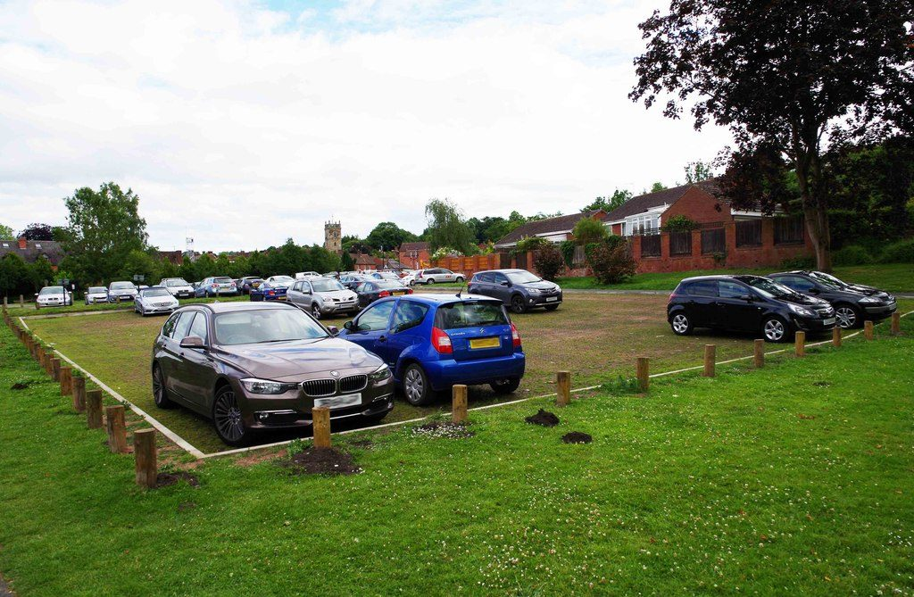

영국 뷰들리 시민단체, 공영주차장 위 '공동체 소유' 태양광 차양 제안…도그 레인 주차장 일부에서 시범 사업

트랜지션 뷰들리의 '뷰들리 에너지', 시범이 성공하면 뷰들리·와이어 포리스트의 다른 주차장으로 넓히는 구상…11월 7일 주민 의견 수렴, 용량·사업비·출자 방식은 밝히지 않아
영국 우스터셔 뷰들리(Bewdley)의 시민단체 트랜지션 뷰들리(Transition Bewdley)가 마을 공영주차장 위에 태양광 패널을 얹은 차양을 세워 '공동체 소유' 발전소로 만들자고 제안했다. 단체는 자체 사업인 뷰들리 에너지(Bewdley Energy)를 통해 먼저 도그 레인(Dog Lane) 주차장 일부에서 시범 사업을 하고, 성과가 나면 뷰들리와 와이어 포리스트(Wyre Forest) 지역의 다른 주차장으로 넓힌다는 구상을 내놨다. 단체는 화석연료 의존을 줄이고 마을이 스스로 지속 가능한 에너지를 만드는 힘을 키우려는 것이며, 차양은 주차한 차를 햇빛과 비로부터 가리는 구실도 한다고 설명했다. 단체 대변인은 이 발전소가 주민과 공동체 서비스, 지역 상점에 이익이 되는 "지역의 '녹색' 에너지원"이 되기를 바란다고 밝혔다. 단체는 11월 7일(토) 오후 2시부터 5시까지 세인트조지 홀 와이어룸에서 주민 의견을 듣고, 이 계획 말고도 뷰들리의 공동체 에너지를 키울 다른 방법에 대한 생각도 모을 예정이다. 설비 용량과 사업비, 주민 출자 방식, 주차장 소유 기관과의 협의 여부는 알려지지 않았으며, 계획은 허가나 의결 전인 제안 단계다.
시민에너지 관점
주차장 한 곳의 일부에서 먼저 해 보고 성과가 나면 지역 주차장 전체로 넓히겠다는 계획을 설계도가 아니라 주민 의견 수렴으로 시작한 것은, 공공 부지 발전소의 첫 질문이 '얼마나 크게'가 아니라 '누구의 것으로'라는 점을 보여 준다. 시민단체가 차양 구조물 같은 큰 설비를 감당할 수 있겠느냐는 우려가 나올 수 있지만, 런던 브릭스턴에서는 주민 협동조합 브릭스턴 에너지(Brixton Energy)가 주민 출자를 모아 공공임대주택 지붕에 태양광을 올려 공공 건물 위에도 주민 소유 발전소를 세울 수 있음을 보여 줬다. 주차장 땅은 이미 주민의 공공 자산인 만큼, 그 위에서 나는 전기의 이익도 업체 임대료로 빠져나가지 않고 출자한 주민과 지역 상점, 공동체 서비스로 돌아갈 때 지역에 남는다. 국내 공영주차장 태양광도 시범 한 곳부터 주민 설명회와 출자 모집을 함께 열고, 성과를 보아 가며 주민 소유 몫을 넓히는 순서로 설계해야 한다.
출처: Kidderminster Shuttle 2026-10-28 Matthew O'Hara 원문 보기
英ビュードリーの市民団体、公営駐車場の上に「コミュニティ所有」の太陽光カーポートを提案…ドッグ・レーン駐車場の一部で試験事業
トランジション・ビュードリーの「ビュードリー・エナジー」、試験が成功すればビュードリー・ワイア・フォレストの他の駐車場へ広げる構想…11月7日に住民の意見聴取、容量・事業費・出資方式は明らかにせず
英ウスターシャー州ビュードリー（Bewdley）の市民団体トランジション・ビュードリー（Transition Bewdley）が、町の公営駐車場の上に太陽光パネルを載せた屋根（カーポート）を設け、「コミュニティ所有」の発電所にしようと提案した。団体は自らの事業であるビュードリー・エナジー（Bewdley Energy）を通じて、まずドッグ・レーン（Dog Lane）駐車場の一部で試験事業を行い、成果が出ればビュードリーとワイア・フォレスト（Wyre Forest）地域の他の駐車場へ広げる構想を示した。団体は、化石燃料への依存を減らし、町が自ら持続可能なエネルギーをつくる力を高めるためだとし、屋根は駐車した車を日差しや雨から守る役割も果たすと説明した。団体の広報担当者は、この発電所が住民や地域サービス、地元の商店に利益をもたらす「地域の『グリーン』エネルギー源」になることを望むと述べた。団体は11月7日（土）午後2時から5時までセントジョージ・ホールのワイアルームで住民の意見を聞き、この計画以外にもビュードリーのコミュニティエネルギーを育てる方法について考えを集める予定だ。設備容量や事業費、住民の出資方式、駐車場を所有する機関との協議の有無は明らかになっておらず、計画は許可や議決の前の提案段階にある。
市民エネルギーの視点
駐車場1か所の一部でまず試し、成果が出れば地域の駐車場全体に広げるという計画を、設計図ではなく住民の意見聴取から始めたことは、公共用地の発電所で最初に問うべきは「どれだけ大きく」ではなく「誰のものとして」だということを示している。市民団体がカーポートのような大きな設備を担えるのかという懸念もありうるが、ロンドンのブリクストンでは住民協同組合ブリクストン・エナジー（Brixton Energy）が住民の出資を集めて公営住宅の屋根に太陽光を載せ、公共の建物の上にも住民所有の発電所を建てられることを示した。駐車場の土地はすでに住民の公共資産である以上、その上で生まれる電気の利益も業者への賃料として流れ出るのではなく、出資した住民や地元の商店、地域サービスに戻ってこそ地域に残る。韓国の公営駐車場の太陽光も、試験的な1か所から住民説明会と出資募集を同時に始め、成果を見ながら住民所有の割合を広げていく順序で設計すべきだ。
出典: Kidderminster Shuttle 2026-10-28 Matthew O'Hara 原文を読む
英国比尤德利市民团体提议在公共停车场上方建"社区所有"光伏车棚…先在道格巷停车场部分区域试点
转型比尤德利的"比尤德利能源"项目设想试点成功后推广到比尤德利和怀尔森林的其他停车场…11月7日听取居民意见，装机容量、投资额和出资方式尚未公布
英国伍斯特郡比尤德利（Bewdley）的市民团体"转型比尤德利"（Transition Bewdley）提议，在镇上的公共停车场上方建设装有光伏板的车棚，把它变成"社区所有"的发电站。该团体通过自己的项目"比尤德利能源"（Bewdley Energy）提出构想：先在道格巷（Dog Lane）停车场的一部分进行试点，取得成效后再推广到比尤德利和怀尔森林（Wyre Forest）地区的其他停车场。团体解释说，这是为了减少对化石燃料的依赖、增强小镇自行生产可持续能源的能力，车棚还能为停放的车辆遮阳挡雨。团体发言人表示，希望这座电站成为惠及居民、社区服务和本地商铺的"本地'绿色'能源来源"。团体将于11月7日（星期六）下午2点至5点在圣乔治会堂的怀尔厅听取居民意见，并收集除这一计划之外发展比尤德利社区能源的其他想法。装机容量、投资额、居民出资方式以及是否已与停车场所有方协商均未公开，该计划仍处于尚未获得许可或决议的提案阶段。
市民能源视角
先在一处停车场的部分区域试点、见效后再推广到整个地区停车场的计划，不是从设计图而是从听取居民意见开始，这说明公共用地上的电站首先要回答的不是"建多大"，而是"归谁所有"。也许有人担心市民团体能否承担车棚这样的大型设施，但在伦敦布里克斯顿，居民合作社"布里克斯顿能源"（Brixton Energy）通过募集居民出资在公共住房屋顶上安装光伏，证明了公共建筑上也能建起居民所有的电站。停车场的土地本来就是居民的公共资产，在其上发电产生的收益只有不以租金形式流向企业，而是回到出资的居民、本地商铺和社区服务手中，才能真正留在当地。韩国的公共停车场光伏也应从一处试点开始，同时举办居民说明会和募集出资，再根据成效逐步扩大居民所有的份额。
来源: Kidderminster Shuttle 2026-10-28 Matthew O'Hara 查看原文
Bewdley citizens' group proposes 'community-owned' solar canopies over public car parks, starting with a pilot on part of Dog Lane car park
Transition Bewdley's Bewdley Energy project would extend the scheme to other car parks in Bewdley and the Wyre Forest if the pilot succeeds; residents' views sought on 7 November, with capacity, cost and ownership model not yet disclosed
Transition Bewdley, a citizens' group in Bewdley, Worcestershire, has proposed building canopies topped with solar panels over the town's public car parks and running them as 'community-owned' power plants. Through its own Bewdley Energy project, the group wants to start with a pilot on a section of Dog Lane car park and, if it works, extend the idea to other car parks in Bewdley and the wider Wyre Forest area. The group says the aim is to cut reliance on fossil fuels and build up the town's ability to generate its own sustainable energy, adding that the canopies would also shelter parked cars from sun and rain. A spokesperson said the group hopes the scheme will become "a local source of 'green' energy" that benefits residents, community services and local businesses. Residents can give their views between 2pm and 5pm on Saturday, 7 November, in the WyreRoom at St George's Hall, where the group will also gather ideas on other ways to develop community energy in Bewdley. The installed capacity, cost, how residents could invest and whether the car park owners have been consulted have not been made public, and the plan remains a proposal with no permission or council decision behind it.
Citizen Energy View
By testing the idea on part of a single car park, planning to scale up across the area only if it works, and starting with a public consultation rather than a blueprint, the group shows that the first question for a power plant on public land is not "how big" but "owned by whom". Some may doubt whether a citizens' group can take on structures as large as car park canopies, but in Brixton, London, the residents' co-operative Brixton Energy raised community investment to put solar panels on the roofs of social housing, proving that resident-owned power plants can be built on public buildings. Because car park land is already a public asset belonging to residents, the value of the electricity generated above it stays in the area only if it flows back to investing residents, local shops and community services rather than leaking out as rent to a contractor. Public car park solar schemes in Korea should likewise begin with one pilot site where resident briefings and share offers open together, and then widen the resident-owned share as results come in.
Source: Kidderminster Shuttle 2026-10-28 Matthew O'Hara Read the original